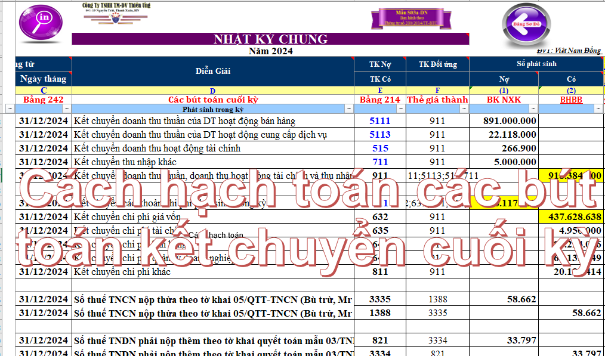
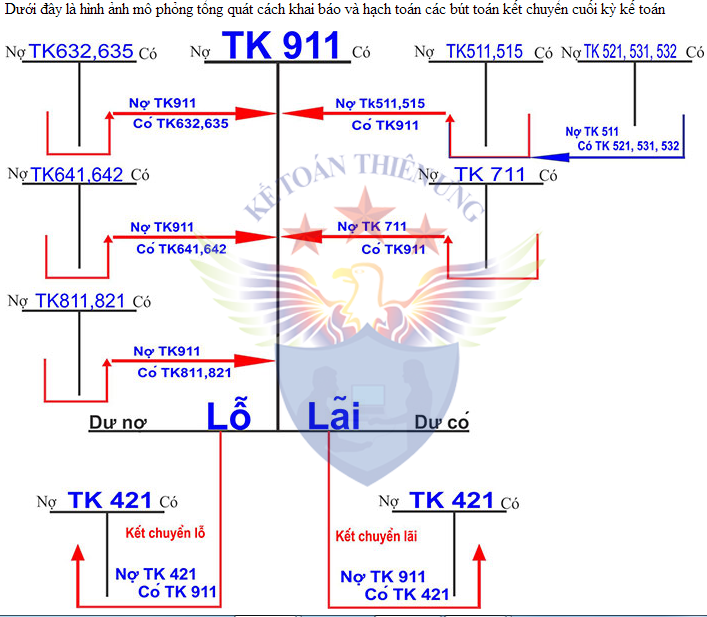

Hướng dẫn cách hạch toán các bút toán kết chuyển cuối kỳ năm tài chính. Hạch toán Kết chuyển chi phí, kết chuyển giá vốn, kết chuyển doanh thu, kết chuyển thuế GTGT, kết chuyển thuế TNDN, kết chuyển lãi lỗ cuối năm ...
1. Hạch toán các bút toán về tiền lương cuối tháng.
- Tính tiền lương phải trả CBCNV
Nợ TK: 154, 241, 622, 623, 627, 641, 642 ...Chi phí (Chi tiết theo từng bộ phận và phải xác định xem DN sử dụng chế độ kế toán theo TT 99 hay là 133)
Có TK 334 - Tổng lương phải trả cho CNV
- Hạch toán khi trích BHXH, BHYT, BHTN, KPCĐ:
+) Tính vào chi phí của DN:
Nợ các TK: 154, 241, 622, 623, 627, 641, 642 .. = Tiền lương tham gia BHXH Nhân (X) 23.5% (Tùy từng bộ phận nhé)
Có TK 3383 – Bảo Hiểm Xã Hội: 17,5%
Có TK 3384 – Bảo Hiểm Y Tế: 3%
Có TK 3386 (theo TT 99) – Bảo Hiểm Thất nghiệp: 1%
(nếu theo Thông tư 133 BHTN là: 3385)
Có TK 3382 – Kinh phí công đoàn: 2%.
+) Tính trừ vào lương của Nhân viên:
Nợ TK 334: 10,5%

Có TK 3383 – Bảo Hiểm Xã Hội: 8%
Có TK 3384 – Bảo Hiểm Y Tế: 1,5%
Có TK 3386 (theo TT 99) – Bảo Hiểm Thất nghiệp:1%
(nếu theo Thông tư 133 BHTN là: 3385)
- Tính thuế TNCN phải nộp (nếu có)
Nợ TK 334 = Tổng số thuế TNCN khấu trừ
Có TK 3335
- Khi thanh toán lương cho CBCNV:
Nợ TK 334 = Tổng tiền thanh toán cho CNV Sau khi đã trừ đi các khoản trích vào lương (BH), thuế TNCN (nếu có), tạm ứng (nếu có).
Có TK 1111, 1121 (Thông tư 99 không có tài khoản chi tiết cho các tài khoản 111, 112)
- Nộp tiền Bảo hiểm, KPCĐ:
Nợ TK 3383: 25,5% (số tiền đã trích BHXH)
Nợ TK 3384: 4,5%
Nợ TK 3386 (nếu theo TT 99): 2%
(nếu theo Thông tư 133 BHTN là: 3385)
Nợ TK 3382: 2%
Có TK 1111, 1121 (Thông tư 99 không có tài khoản chi tiết cho các tài khoản 111, 112)
2. Hạch toán Trích khấu hao TSCĐ cuối tháng:
Nợ TK: 154, 241, 622, 627, 641, 642 ... Số khấu hao kỳ này (chi tiết theo từng bộ phận và phải xác định xem DN sử dụng chế độ kế toán theo TT 99 hay là 133)
Có TK 214 = Tổng khấu hao đã trích trong kỳ.
3. Hạch toán phân bổ chi phí trả trước (nếu có)
Nợ TK: 154, 241, 622, 627, 641, 642 ... Chi phí (chi tiết theo từng bộ phận và phải xác định xem DN sử dụng chế độ kế toán theo TT 99 hay là 133)
Có TK 242 = Tổng số đã phân bổ trong kỳ
4. Hạch toán Kết chuyển thuế GTGT:
Lưu ý:
- Việc hạch toán kết chuyển thuế GTGT cuối kỳ chỉ thực hiện đối với DN kê khai thuế GTGT theo phương pháp khấu trừ.
- Nếu DN bạn kê khai thuế GTGT theo phương pháp trực tiếp thì có thể xem thêm: Cách hạch toán thuế GTGT theo pp trực tiếp
- Bản chất của việc hạch toán kết chuyển thuế GTGT là việc tính ra số thuế GTGT còn phải nộp hay còn được khấu trừ chuyển kỳ sau. Các bạn hạch toán kết chuyển như sau:
| Nợ TK 3331 | = (Là số nhỏ nhất của 1 trong 2 tài khoản) |
| Có TK 1331 |
Giải thích: Khi kết chuyển theo số nhỏ, là số nhỏ nhất của 1 trong 2 TK 1331 hoặc 3331, thì số tiền này sẽ bị triệt tiêu và có được kết quả còn lại của 1 trong 2 tài khoản, khi đó sẽ biết được phải nộp hay được khấu trừ:
- Nếu số nhỏ nhất là số tiền của TK 1331 thì TK 3331 sẽ còn số dư và phải nộp.
- Nếu số nhỏ nhất là số tiền của TK 3331 thì TK 1331 sẽ còn số dư và còn được khấu trừ.
Cách xác định để biết được Số nhỏ nhất như sau:
a. Trường hợp 1:
|
Dư Nợ đầu kỳ 1331 + Tổng PS Nợ 1331 - Tổng PS Có 1331 |
> |
Tổng PS Có 3331 - Tổng PS Nợ 3331 |
|
Nợ TK 3331 |
= Số nhỏ = Tổng PS Có 3331 - Tổng PS Nợ 3331 => Còn được khấu trừ chuyển kỳ sau. |
|
Có TK 1331 |
b. Trường hợp 2:
|
Dư Nợ đầu kỳ 1331 + Tổng PS Nợ 1331 - Tổng PS Có 1331 |
< | Tổng PS Có 3331 - Tổng PS Nợ 3331 |
|
Nợ TK 3331 |
= Dư ĐK 1331 + Tổng PS Nợ - Tổng PS Có 1331 => Phải nộp tiền thuế GTGT. |
|
Có TK 1331 |
- Khi nộp tiền thuế GTGT:
|
Nợ TK 3331 |
= (Tổng PS Có 3331 - Tổng PS Nợ 3331) - (Dư Đầu kỳ 1331 + Tổng PS Nợ - Tổng PS Có 1331) |
|
Có TK 111, 112 |
5. Hạch toán kết chuyển các khoản giảm trừ doanh thu:
- Chú ý: Nếu DN áp dụng theo Thông tư 99 thì mới có TK 521 nhé, còn nếu theo TT 133 thì không có TK 521 Không có bút toán này nhé (vì khi hạch toán đã giảm trực tiếp trên TK 511 rồi).
Nợ TK 511 (Thông tư 99 không có tài khoản chi tiết cho tài khoản 511)
Có TK 521 (Thông tư 99 không có tài khoản chi tiết cho tài khoản 521)
6. Hạch toán Kết chuyển doanh thu:
- Bút toán kết chuyển doanh thu bán hàng hóa, dịch vụ...:
Nợ TK 511 (Thông tư 99 không có tài khoản chi tiết cho tài khoản 511)
Có TK 911
- Bút toán Kết chuyển Doanh thu hoạt động tài chính
Nợ TK 515
Có TK 911
7. Hạch toán kết chuyển chi phí:
- Bút toán Kết chuyển giá vốn hàng xuất bán trong kỳ:
Nợ TK 911
Có TK 632
- Bút toán Kết chuyển chi phí hoạt động tài chính:
Nợ TK 911
Có TK 635
- Bút toán Kết chuyển chi phí bán hàng:
Nợ TK 911
Có TK 641 - theo TT 99 (nếu theo Thông tư 133 là TK 6421)
- Bút toán Kết chuyển chi phí quản lý Doanh nghiệp:
Nợ TK 911
Có TK 642 - theo TT 99 (nếu theo Thông tư 133 là TK 6422)
8. Hạch toán Kết chuyển thu nhập khác:
Nợ TK 711
Có TK 911
9. Hạch toán Kết chuyển chi phí khác:
Nợ TK 911
Có TK 811
10. Hạch toán tiền thuế TNDN tạm tính quý (nếu phải nộp)
Nợ TK 821
Có TK 3334
=> Cuối năm, căn cứ vào số tiền thuế TNDN phải nộp theo Tờ khai quyết toán thuế, cụ thể như sau:
- Nếu số tạm nộp hàng quý NHỎ HƠN số thực tế phải nộp: => Nộp thiếu => Phải nộp thêm:
Nợ TK 821
Có TK 3334
- Nếu số tạm nộp hàng quý LỚN HƠN số thực tế phải nộp: => Nộp thừa (ghi giảm chi phí thuế TNDN):
Nợ TK 3334
Có TK 821
Chi tiết xem thêm: Cách hạch toán chi phí thuế TNDN
11. Hạch toán Kết chuyển chi phí thuế TNDN (chỉ thực hiện ở cuối năm tài chính)
Nợ TK 911
Có TK 821
12. Hạch toán Kết chuyển lãi (lỗ) cuối năm:
- Nếu lãi:
Nợ TK 911
Có TK 4212
- Nếu lỗ:
Nợ TK 4212
Có TK 911
SƠ ĐỒ HẠCH TOÁN CÁC BÚT TOÁN KẾT CHUYỂN CUỐI KỲ

-------------------------------------------------------------------------------------------------------------------------
Kế toán Diệu Tâm xin chúc các bạn thành công!
Các bạn muốn học cách hoàn hiện sổ sách, lập Báo cáo tài chính trên Excel thực hành bằng chứng từ thực tế, có thể tham gia: Lớp học kế toán trên Excel